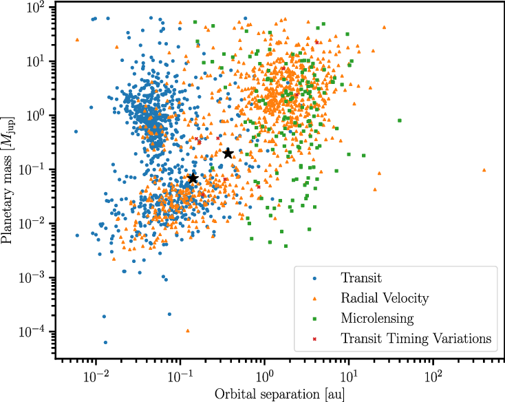

Exploring the Diversity of Known Exoplanets#
Learning Objectives
Understand the difference between various exoplanet detection methods.
Be able to download and open a data file from the NASA Exoplanet Archive into a
pandasdataframe.Filter the table to plot standard exoplanet diagrams, colored by detection technique.
Introduction#
When we detect exoplanets (planets orbiting other stars), we often obtain a subset of the following three direct observable properties:
Their radius (formally, their radius relative to their host star),
Their mass, and/or
Their orbital separation (aka radius for circular orbits, or semi-major axis for elliptical orbits).
The information available comes down to the detection methods used to find and characterize these systems.
Transit Method: In this technique, exoplanets are detected by observing the periodic dimming of a star’s light as a planet passes in front of it (transits) from our line of sight. By measuring the decrease in brightness during transit events, astronomers can infer the presence and characteristics of orbiting planets. This method provides relative radius (from the depth of the dip) and orbital separation (inferred from the duration of an orbit, or time between transits).
Radial Velocity Method: This method detects exoplanets by measuring the small periodic shifts in the star’s radial velocity caused by the gravitational pull of an orbiting planet. As the planet orbits the star, it causes the star to wobble slightly. This wobble can be detected through Doppler spectroscopy, and it provides an estimate of the mass (from Newton’s laws) and orbital separation (from the period of the wobbles) of the planet.
Microlensing: Exoplanets can be detected through gravitational microlensing, where the gravitational field of a foreground star bends and magnifies the light of a background star as well as any orbiting planets. The presence of an exoplanet around the foreground star can be inferred from the temporary increase in brightness observed during the microlensing event.
Transit Timing Variations (TTV): Exoplanets can be inferred through TTVs by measuring the variations in the timing of transit events caused by gravitational interactions between multiple planets within a system. These deviations from the expected transit times provide information about the masses and orbits of the interacting planets.
In addition to these four, there are a number of other methods of detecting planets (such as direct imaging)!
It is common to plot detected exoplanets in the space of mass vs. orbital separation. Here, we show one such plot, colored by the detection technique used to find the planet (follow-up observations may have been needed to compute mass or separation).

The x-axis of this figure shows the mass of the planet on a log scale, typically measured in Jupiter masses (where 1 Jupiter mass equals approximately \(1.898 \times 10^{27}\) kg). The y-axis, also on a log scale, represents the planet-star separation, often expressed in astronomical units (AU), with 1 AU equivalent to the average distance between the Earth and the Sun (approximately 149.6 million kilometers). Each data point plotted signifies an individual exoplanet.
Checkpoint: Why might the blue (transit) points be clustered toward small separation/high mass?
Because the dip in light is larger when a large (and thus usually more massive) planet passes in front of the star, larger planets produce deeper and more easily detectable transit signals.
Because the transit method requires the planet’s orbit to be edge-on relative to the viewer, closer-in orbits have a higher chance of passing in front of the star.
To 100% confirm an exoplanet, you (typically) must detect the transit 2-3 times at a regular interval. Most transit-detecting satellites have not observed for more than a year or two, meaning planets with progressively longer years (larger orbital separation) take longer to confirm.
The Mass-Separation Plot#
In this exercise, we will recreate the above figure using data available in the NASA exoplanet archive.
Exercise 1
Download the full catalog of known exoplanet properties from the NASA Exoplanet Archive. Navigate to the Data Page of https://exoplanetarchive.ipac.caltech.edu/ , then to the
Planetary Systems Composite Datalink. Hit Download Table –> download as csv.Within a Jupyter notebook, load the table you just downloaded into a Pandas dataframe.
Exercise 2
Using the “np.unique” function in numpy applied to your dataframe, figure out all the possible exoplanet discovery methods report in this table (note: as mentioned above the four methods shown in the provided figure are not the only possible methods)!
Try to recreate the figure shown above using the same units, axis scaling (logarithmic scale), and labels/legend! To do this, filter your pandas dataframe by each discovery method and use different calls to plt.scatter() to plot them in stylistically distinct ways.
Recreating Another Classic Plot: Period-Radius Diagram#
Another classic figure shows the period of detected exoplanets against their planet radius. In this exercise, we’ll create that figure.
Exercise 3
Using the same full exoplanet dataframe you downloaded and opened for exercise 1, trying plotting the exoplanet period-radius diagram. This is another classic exoplanet figure! The x-axis typically represents the logarithm of the orbital period of exoplanets, measured in days. The y-axis represents the logarithm of the radius of exoplanets, usually measured in terms of Earth radii.